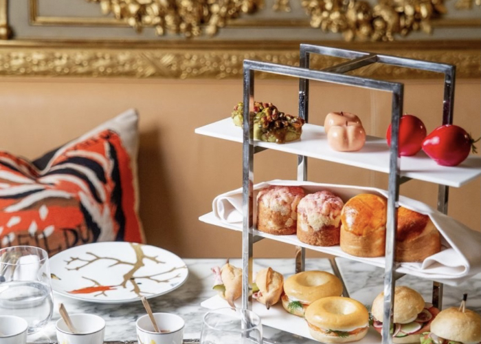
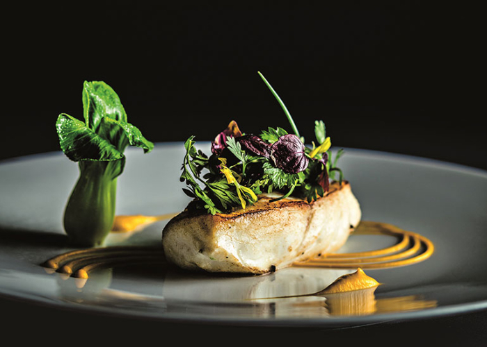
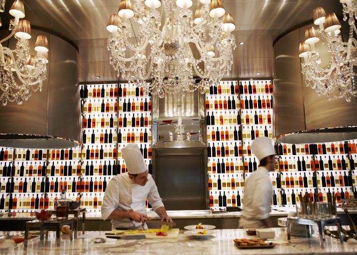
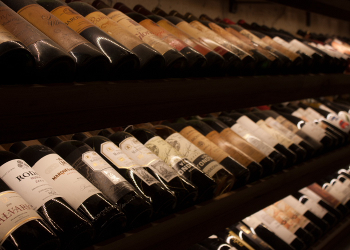

LE RESTAURANT
Conçu dans l’esprit d’un salon privé intime et chaleureux, il est le cœur même de la maison. De 6 heures
à 22h, le restaurant accueille aussi bien les invités de l'hôtel de Chambord que les habitués du
quartier ou les visiteurs de passage; les fauteuils profonds et l’ambiance feutrée vous attendent pour
partager un moment de détente autour d’une coupe de Champagne.

BRASSERIE - CARTE DU MIDI
TOUR DE FRANCE DES HUÎTRES
- Utah Beach n° 3, Sainte-Marie-du-Mont, Normandie
- Spéciales Gillardeau n° 3, Charente-Maritime
- Fines de Claire n° 3, Marennes Oléron, Pattedoie père et fils
- Plates de Belon n° 2, Prat-Ar-Coum, Yvon Madec
- Veules-les-Roses n° 3, Normandie
LES ENTRÉES
- Salade Raspail, crudités, coriandre fraîche,
sauce onctueuse et homard du Maine
demi ou entier
- Palourdes cuisinées minute à la persillade
- Escargots de Bourgogne Label rouge, beurre persillé
- 3 huîtres fumées, crème épaissie au vinaigre
de Kombu
- Tartare de bar pressé de citron Calamansi
- Caviar osciètre 30g, toasts et crème légère
LES PLATS
- Crudo de thon aux parfums d’Asie
- Sole portion cuisinée meunière, câpres et fines herbes
- Steak tartare dans la bavette et ses condiments
- Suprême de poulet fermier rôti moutarde, pommes purée, jus court et épices
- Bavette de boeuf persillée, grillée, sauce chimichurri et pommes frites

EN APRES MIDI - Dégustation
- LUNDI A VENDREDI : 14H30-19H00
- SAMEDI ET DIMANCHE : 15H00-19H00
LES PLATEAUX
- DÉGUSTATION D’HUÎTRES
- 2 Plates de Belon n°2, 2 Utah Beach n°3, 2 Fines de Claire n°3
- 2 Plates de Belon N° 2, 2 Utah Beach N° 3, 2 Fines de Claire N° 3
LES ENTRÉES
- Belle assiette de saumon fumé, crème légère citronnée
- Avocat vinaigrette au citron et riz soufflé
- Salade Sèvres, tomates confites, ventrèche de thon, olives et parmesan
LES PLATS
- Macaroni all’arrabbiata
- Sole portion cuisinée meunière, câpres et fines herbes
- Suprême de poulet fermier rôti moutarde, pommes purée, jus court et épices
- Bavette de boeuf persillée, grillée, sauce chimichurri et pommes frites

RESTAURANT - CARTE DU SOIR
COQUILLAGES ET CRUSTACÉS
- Bulots, 350 g
- Palourdes
- Bouquet de crevettes roses
- Langoustines pochées à la nage
- Homard du Maine entier en bellevue, mayonnaise maison
LES PLATS
- Tajine de turbot aux artichauts et citron confit
- Turbot tajine, artichokes and preserved lemon
- Maigre-bar cuisiné vapeur, niçoise de légumes, sauce vierge au citron et basilic
- Macaroni épicés à la bisque flambée et crevettes
- Couscous de légumes aux épices berbères
- Carpaccio de boeuf printannier, roquette, artichauts Peccorino et tomates confites
SUPPLÉMENT DE GARNITURE
- Salade verte, fricassée de légumes de saison
- Purée de pommes de terre, pommes frites
- haricots verts au persil plat

DESSERTS & CARTE DES VINS
DESSERTS
- Sélection de fromages affinés
- Tarte passionnément chocolat
- Millefeuille vanille et framboises
- Pavlova fraise basilic
- Flan parisien vanille combawa
CARTE DES VINS
VINS BOUTEILLES - BLANC
- Loire Sancerre 2018
- Domaine Vacheron
- Bourgogne
- Chablis 1er cru « Montée de Tonnerre » 2018
- Domaine Droin
- Pouilly-Fuissé « Secret Mnéral » 2015
VINS BOUTEILLES - ROUGE
- Loire Sancerre 2017
- Domaine Vacheron
- Saumur Champigny «Les Poyeux» 2014
- Domaine A.Sanzay
- Bourgogne Chambolle-Musigny 2008
- Domaine David Duband